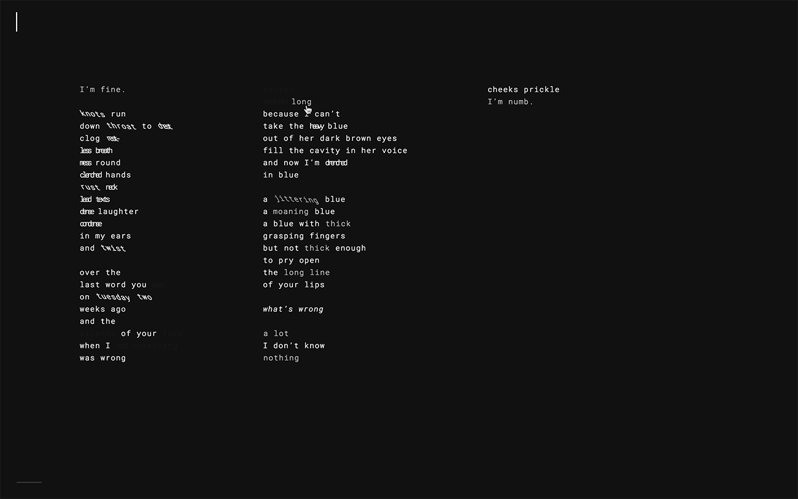
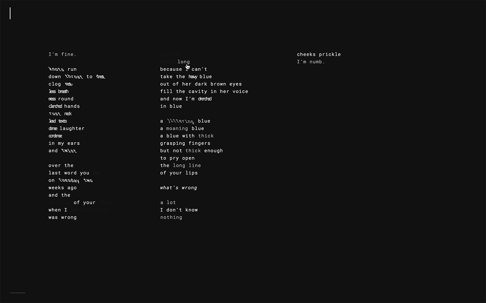
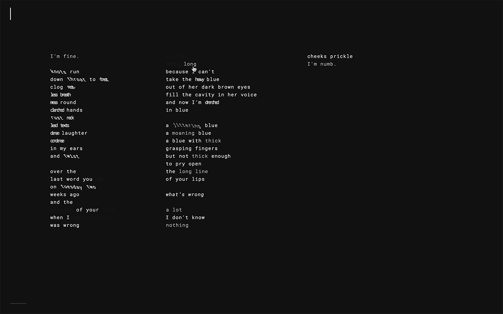

← I'M FINE
I'm Fine is an interactive web experience of a collection of poems written in the past couple years alluding to stories and experiences of mental illness in the lives of people close to me. Among all creative outlets, poetry has always been the most powerful for me in personal emotional expression, but I've found poetry is often viewed as archaic or mundane in modern culture. By publishing these poems on a digital platform, I hope to also present poetry as a medium still ever relevant and engaging.
Animations are purely type-based, often to emphasize various sounds and patterns, such as alliterations and assonance throughout the poems. Users are also able to switch between auditory and visual experiences of the poems throughout the site by clicking an icon at the bottom of each page. On click, the text will fade away and an audio file of a girl reading the poems will be played. Through this secondary way of experiencing each poem, I wanted to further highlight the versatility of poetry and juxtapose the experiences of being both reader and listener.
To experience the interactive poems, click here.
